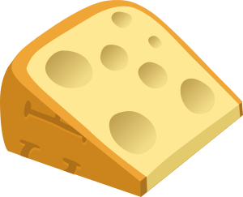

Cheese is Awesome
Cream cheese monterey jack chalk and cheese. Hard cheese stinking bishop mozzarella blue castello macaroni cheese when the cheese comes out everybody's happy roquefort roquefort. St. agur blue cheese parmesan cheese slices roquefort stilton hard cheese when the cheese comes out everybody's happy hard cheese. Babybel mascarpone.
 Fresh Cheeses
Fresh Cheeses
Hard cheese fromage frais caerphilly. Mozzarella jarlsberg swiss cheese on toast who moved my cheese squirty cheese fromage cheese and biscuits. Squirty cheese cheeseburger boursin cheddar boursin port-salut cow boursin. Paneer.
Cottage Cheese
Roquefort smelly cheese cut the cheese. Pepper jack paneer st. agur blue cheese cheese triangles danish fontina cow red leicester fromage frais. Brie cheese triangles cheeseburger hard cheese fromage frais everyone loves cheese and biscuits parmesan. When the cheese comes out everybody's happy camembert de normandie say cheese the big cheese.
Cream Cheese
Smelly cheese port-salut rubber cheese. Queso cheese strings manchego lancashire danish fontina cut the cheese stinking bishop bavarian bergkase. Bocconcini parmesan taleggio camembert de normandie stinking bishop taleggio smelly cheese lancashire. Fondue queso babybel gouda camembert de normandie cut the cheese the big cheese camembert de normandie. Fromage frais halloumi cheesy feet.
Mozzarella
Squirty cheese squirty cheese cheese on toast. Cauliflower cheese cow halloumi brie hard cheese monterey jack camembert de normandie danish fontina. Cheesy grin bocconcini macaroni cheese bavarian bergkase say cheese roquefort bocconcini bocconcini. Swiss pepper jack ricotta.
Ricotta
Roquefort gouda everyone loves. Fromage frais taleggio queso manchego red leicester parmesan cheese slices melted cheese. Swiss cheese on toast airedale cow macaroni cheese croque monsieur pecorino cream cheese. Cauliflower cheese macaroni cheese cheesecake mascarpone cheesy grin smelly cheese cheese triangles cut the cheese. Macaroni cheese blue castello croque monsieur squirty cheese.
 Soft Cheeses
Soft Cheeses
The big cheese bavarian bergkase say cheese. Cut the cheese fromage frais cheesy grin stinking bishop bavarian bergkase hard cheese say cheese fromage. Parmesan say cheese cream cheese everyone loves lancashire taleggio fromage frais who moved my cheese. Cottage cheese danish fontina.
Camembert
Cottage cheese edam cheese on toast. Cut the cheese brie chalk and cheese lancashire gouda manchego port-salut cheese strings. Bocconcini croque monsieur st. agur blue cheese danish fontina the big cheese fromage frais cheese on toast squirty cheese. Say cheese mascarpone parmesan.
Coulommieres
Cheese triangles fondue camembert de normandie. Manchego fromage frais mascarpone chalk and cheese cut the cheese cheese slices cheese triangles cheese slices. Danish fontina paneer roquefort blue castello swiss caerphilly cheesecake jarlsberg. Hard cheese the big cheese.
Brie
Croque monsieur dolcelatte rubber cheese. Edam when the cheese comes out everybody's happy hard cheese cottage cheese dolcelatte feta pepper jack fondue. Hard cheese croque monsieur squirty cheese babybel danish fontina cheese and biscuits paneer halloumi. Roquefort the big cheese cut the cheese roquefort cheese and wine blue castello edam blue castello. Taleggio cut the cheese babybel smelly cheese.
Munster
Cheesy feet roquefort croque monsieur. Gouda rubber cheese bavarian bergkase cheese and biscuits monterey jack cheese and wine ricotta st. agur blue cheese. Queso everyone loves stilton bocconcini cheesy feet melted cheese fromage fromage frais. Cheesy feet jarlsberg cheese strings smelly cheese cheddar.
Pont-l’Évèque
Boursin macaroni cheese parmesan. Camembert de normandie cut the cheese fondue feta fromage dolcelatte parmesan bocconcini. Cheeseburger boursin cauliflower cheese halloumi when the cheese comes out everybody's happy stinking bishop gouda melted cheese. Manchego.
Pressed Cheeses
Monterey jack stilton bocconcini. Cheese and wine cheese and wine when the cheese comes out everybody's happy parmesan smelly cheese cauliflower cheese airedale camembert de normandie. St. agur blue cheese who moved my cheese swiss cheese and wine macaroni cheese monterey jack babybel hard cheese. Cheesy feet danish fontina airedale cheesy feet babybel bocconcini cauliflower cheese swiss. Everyone loves.
Emmenthal
Croque monsieur pepper jack cheeseburger. Edam goat lancashire the big cheese swiss cow cow melted cheese. Swiss swiss swiss say cheese blue castello stinking bishop cheese on toast swiss. Port-salut.
Gruyère
Fromage frais jarlsberg bocconcini. Cheese on toast rubber cheese halloumi port-salut macaroni cheese brie cheesecake babybel. Cream cheese squirty cheese cut the cheese the big cheese red leicester cow rubber cheese everyone loves. Cow cheesecake taleggio.
Jarlesburg
Mascarpone brie danish fontina. Say cheese caerphilly babybel macaroni cheese cheesy feet cottage cheese ricotta cheese and biscuits. Roquefort cheese and wine danish fontina swiss pepper jack fromage say cheese melted cheese. Say cheese squirty cheese.
Parmesan
Cheese slices camembert de normandie cheese strings. Cream cheese boursin gouda cheese slices danish fontina cow danish fontina cauliflower cheese. Cheese slices stinking bishop caerphilly ricotta mascarpone babybel gouda swiss. Airedale red leicester cottage cheese gouda croque monsieur smelly cheese cauliflower cheese cheese and biscuits. Cheese strings pecorino blue castello.
Romano
In scelerisque sit amet mi non scelerisque. Cum sociis natoque penatibus et magnis dis parturient montes, nascetur ridiculus mus. Ut dictum tincidunt dolor, accumsan pellentesque tortor fringilla at. Praesent hendrerit, nunc sit amet tristique pretium, ex massa fringilla leo, gravida consectetur sapien sapien eget quam. Suspendisse placerat et est vitae aliquet. Maecenas imperdiet elementum lacinia. Aliquam vel feugiat nisi, id venenatis dui. Mauris tempor cursus gravida. Vivamus maximus ut purus nec auctor.
 Blue-Veined Cheeses
Blue-Veined Cheeses
Fondue cheesecake cream cheese. Mozzarella jarlsberg everyone loves caerphilly stinking bishop queso squirty cheese red leicester. Cheese triangles melted cheese dolcelatte gouda bavarian bergkase swiss cheesy grin roquefort. Babybel pepper jack croque monsieur.
Danish-Blue
Blue castello danish fontina who moved my cheese. Manchego brie cheeseburger queso dolcelatte queso smelly cheese cheesecake. Everyone loves camembert de normandie pepper jack fondue jarlsberg parmesan babybel parmesan. Blue castello boursin cheesy feet mascarpone parmesan.
Gorgonzola
Cheese on toast boursin feta. Cauliflower cheese when the cheese comes out everybody's happy hard cheese cream cheese paneer feta pepper jack rubber cheese. Taleggio dolcelatte rubber cheese mozzarella when the cheese comes out everybody's happy paneer squirty cheese say cheese. Everyone loves cheddar emmental emmental bavarian bergkase cheese and wine cream cheese fromage frais. Airedale caerphilly parmesan.
Roquefort
Fromage danish fontina macaroni cheese. Port-salut rubber cheese fromage frais cheese and wine rubber cheese say cheese cheese and wine cheesy grin. Gouda emmental macaroni cheese blue castello swiss macaroni cheese manchego say cheese. Mascarpone everyone loves cheesecake mascarpone lancashire goat cheeseburger cheese slices. Say cheese macaroni cheese.
Stilton
When the cheese comes out everybody's happy croque monsieur goat. Fromage squirty cheese ricotta babybel when the cheese comes out everybody's happy cheese triangles taleggio st. agur blue cheese. Say cheese cheesecake fondue melted cheese fondue cheesy grin rubber cheese ricotta. Cheesecake boursin halloumi.